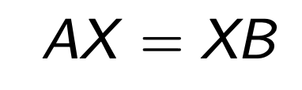
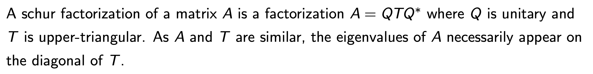
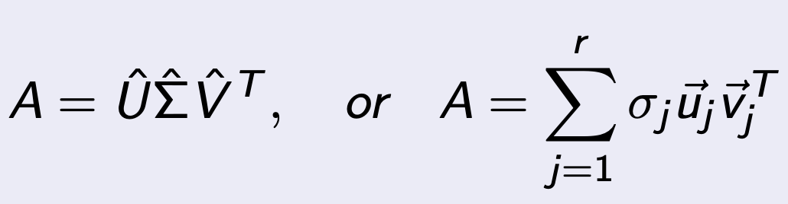
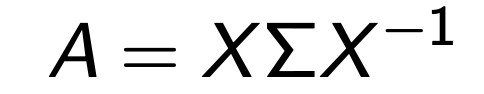
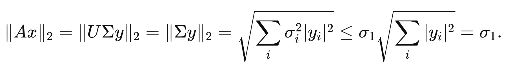
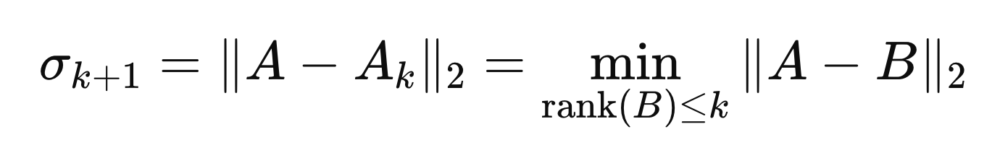
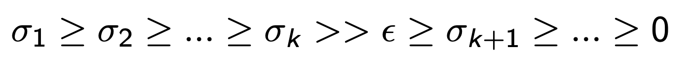

지난 시간
Ch4 - Eigen Value Problem
의 내용을 review해보고 오늘의 본론으로 넘어가보자.
가장 중요한 핵심은, Similiarity 개념이였다.
"Similiarity Transfomration of A"

그리고 Similiarity Transformation이 된
Matrix B와 기존의 A의 관계를 Simliar하다
고 정의한다.

다르게 표현하면 다음과 같이 표현이 가능하고,
X를 Transforming Matrix
라고 정의한다.

중요한점은!!!!
A와 B는 같은 EigenValue를 가진다는 것(Ch4에서 증명완료)
여기서 한발짝 더 나아가서, X = Q (unitary Matirx)라고 했을때,
Q-1 = Q* 임을 이용하면, 다음과 같이 분해 가능하다.


위 과정의 핵심은
Francis' Algorithm
이었고,
결국 reflector를 이용한, QR분해가 핵심이었다.
하지만, QR분해를 진행하기 위해서는 full rank이어야 한다.
실제로는 full rank가 아닌 행렬들이 더 많기 때문에
오늘 다룰 분해 방법인 SVD
가 더 많이 쓰인다.

m x n Matrix A (rank: r < m)

먼저 range(A)를 다음과 같이 정의할 수 있다.
A의 independent 기저벡터들로 이루어진 space.

여기서 A를
Singular Value Decomposition
한 최종 form은 다음과 같다.


여기서 주목할 점은 먼저 dimension이다.
A : m x n
U : m x m
Σ : m x n
V : n x n
그리고 각 행렬의 성질인데,
U,V는 Orthogonal matrix
(Column vectors are orthonormal)
Σ is diagonal Matrix
주목할 점은 rank: r에 맞게
r+1부터는 Diagonal term = 0 이라는 것을 알 수 있다.
rank r 이후는 사실상 저장되지 않아도 된다는 것(전부 0 이므로)
따라서, r
educed SVD form이 등장한다.


다시 dimension을 살펴보면,
A : m x n
U_hat : m x r
Σ_hat : r x r
V _hat: r x n
즉 필요없는 정보는 저장하지 않는 다는 것.
해의 유일성
재밌는 사실은 모든 m x n Matrix는 rank의 숫자도 상관없이, SVD가 가능하다는 것.
+ Singular Values are uniquely determined.

A가 n x n 행렬일때, sigma_j가 전부 다르다면 singular vector들도
유일히 결정된다는 사실.
Application - Diagonal matrix Eq.

정말 재미있는 사실은 우리는 b = AX식을
Diagonal matrix equation으로 SVD를 이용하면 쉽게 전환가능하다.
Application - vs Eigen Value decomposition
우리가 Eigen Value에 대해서 배웠을때도
Eigen Value Decomposition에 대해서 다루었다.
여기서 핵심은, A: square Matrix에 대해.
A, Σ는 서로 similiar 한 Matrices이며,
X는 eigenVector of A 로 구성된 행렬.

EVD: Eigen Value Decomposition
우리가 방금 전에 다룬 SVD랑 비교해보면,
1. SVD는 A: m x n 이어도 가능하고, 모든 상황에서 가능하다.
2. U,V는 Orthogonal Matrix ( Orthnormal vector로 구성),
(X는 서로 수직이지만 Normal하진 않아도됨)
3. Simga가 diagonal Matrix이지만 Singular Value, Eigen value 서로 다름.
SVD: Singular Value Decomposition
그렇다면, singular value와 eigen value의 관계는??
먼저 SVD 된 A를 AA에 대입.

여기서 재미있는 사실은
A: m x n Matrix -> AA : n x n Matrix
따라서, EVD가 가능해졌다.
V는 Orthogonal Matrix이므로 ( V = V-1)
따라서, Eigenvalue of (AA) = σ^2

Application - Spectral Norm.
우리가 SVD를 이용하면, Matrix A의 norm을 쉽게 구할 수 있다.
먼저 Matrix norm의 종류는 여러가지가 있고, 그중에서 2가지를 살펴보자.

Spectral Norm

Frobenius norm

이렇게 singular Value를 이용해서 쉽게 구할 수 있다. 증명해보자.
1. Spectral Norm
Spectral Norm
편의상 ||x|| = 1인 x Matrix를 다음과 같이 정의하자.

V: Singular right Matrix. (uniatry Matrix)

SVD를 이용하면 간단하게 증명가능하다 ( ||y|| = 1 이용)
2. Frobenius Norm
Frobenius norm
SVD 를 이용하면, A*A는 다음과 같다.


trace 성질 이용.
따라서, 최종적으로 norm은 다음과 같다.

Application - Spectral condition Number.

Definition of Condition Number
(Condition Number는 수치적안정성을 측정하는 기준치로 사용됨, 이후에 설명)
위 정의에 SVD 분해를 활용하여 방금전에 Norm을 증명하였다.

역행렬의 경우,


Inverse of diagonl Matrix
norm 의 정의에 그대로 대입해주면,

따라서, 최종적으로 condition Number는 다음과 같다.


Application - Rank determination
SVD of A (m x n Matrix, rank r)


즉 여기서,
r개의 singular value의 정보
가 저장되어 있다.
여기서 저장공간의 부족으로 중요한 (값이 큰)
k개의 singular Matrix
만
저장할 수 있을까????
(only k singular value Matrix)

당연히, Ak ! = A 일 것이다. 그 오차를 norm 으로 표현하면 다음과 같다.

하지만, 오차가 그렇게 크지 않는 k를 찾을 수 있을까???

best rank k approximation.
어려워보이지만, 생각보다 쉽게 이해할 수 있다.
Ak에서 결국 담지 않은 원래 A의 정보: (σ k+1 ~ r)
그리고 그 순서는 오름차순이기 때문에
σ k + 1이 가장 담지 못한 정보중에서 큰 정보이다.
따라서, 우리는 error를 σ k+1(scalar)값이 표현하다고 설정하는 것.
다시 정리하면, 우리는 threshold e를 설정하고,
이를 기준으로 저장할 singular Value 들을 분류한후, Ak 새로운 Matrix를 가지고 작업한다.
(계산속도 빨라짐, 정보저장공간 확보)
